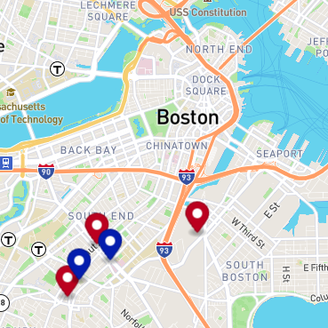

Projects
Some projects that exemplify the use of HTML, CSS, and JavaScript.
PacMen
The game or program allows the user to add one or more PacMen to the browser and then set them in motion across the screen up and down and from side to side. This program uses CSS and also uses JavaScript to give movement to the PacMen.
 Goto PacMen
Goto PacMen
Eyes Movement
This is a simple exercise that moves a pair of ayes in the direction of the mouse movement. This program uses CSS to give color and shape to the eyes and also uses JavaScript to give movement to the eyes using a mouse event to follow its movement.
Goto EyesMovementLive BusTracker
This program fetches information from the MBTA about the location of it buses and uses a map API from mapboxgl to track the live movement of the buses. The location of the buses is re-fetched every 15 seconds, updates the information in the map as well.
 Goto Live BusTracker